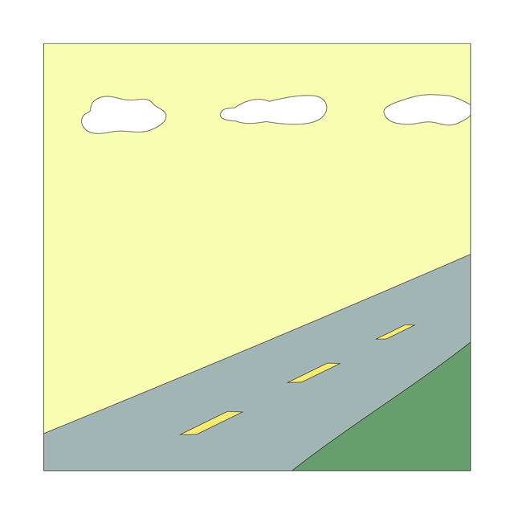
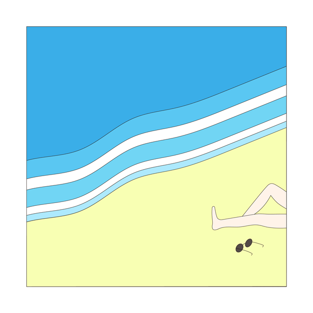
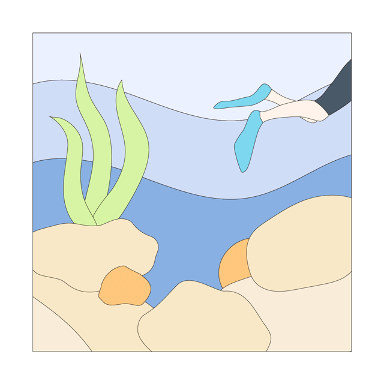
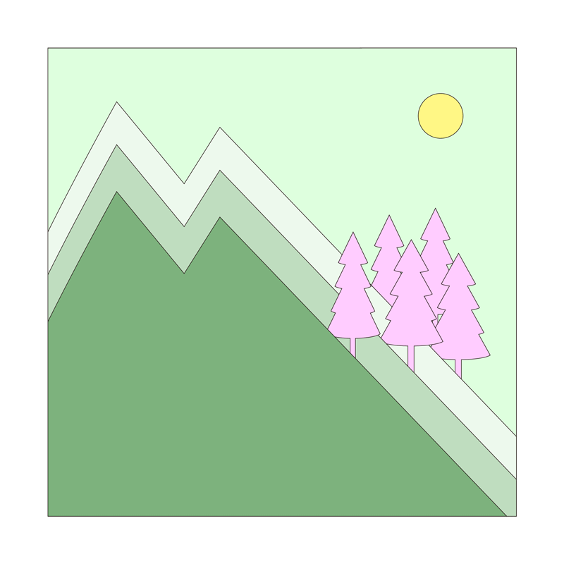

illustration
Liu Liang Yin
About & CV
previous




Hang Out
該出門走走摟！四格漫畫形式的動畫創作。
Time to have fun!
Created with squared form, like comics.
01 Roadtrip
02 Lying on Beach
03 Under the Sea
04 Hide in Moutains
https://liuliangyin.github.io/roadtrip/
https://liuliangyin.github.io/Beach/
https://liuliangyin.github.io/underthesea/
https://liuliangyin.github.io/moutains/
animation
graphic
illustration
next